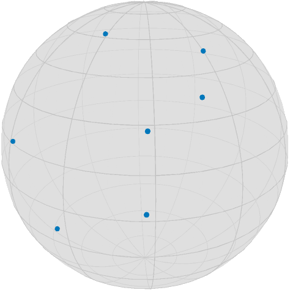
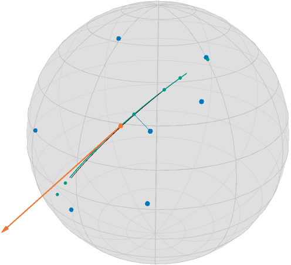
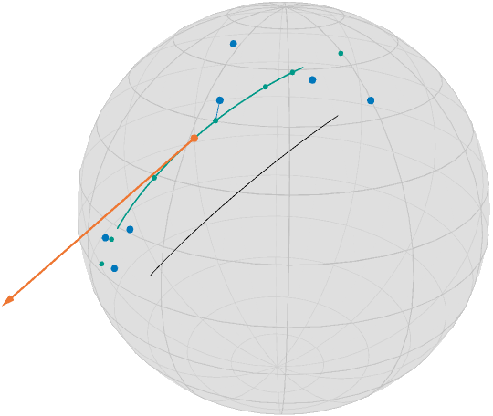
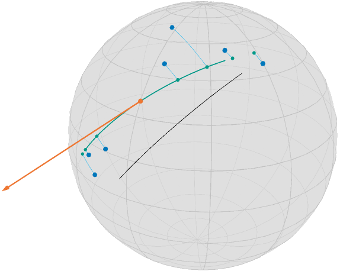

Geodesic Regression
Geodesic regression generalizes linear regression to Riemannian manifolds. Let's first phrase it informally as follows:
For given data points $d_1,\ldots,d_n$ on a Riemannian manifold $\mathcal M$ find the geodesic that “best explains” the data.
The meaning of “best explain” has still to be clarified. We distinguish two cases: time labelled data and unlabelled data
Setup
using Manopt, Manifolds, Colors, Random
using LinearAlgebra: svd
black = RGBA{Float64}(colorant"#000000")
TolVibrantOrange = RGBA{Float64}(colorant"#EE7733")
TolVibrantBlue = RGBA{Float64}(colorant"#0077BB")
TolVibrantTeal = RGBA{Float64}(colorant"#009988")
TolVibrantMagenta = RGBA{Float64}(colorant"#EE3377")
TolVibrantCyan = RGBA{Float64}(colorant"#33BBEE")
Random.seed!(42)
n = 7
highlighted = 4
(highlighted > n - 1) && error(
"Please choose a highlighted point from {1,...,$(n-1)} – you set it to $highlighted.",
)
σ = π / 8
S = Sphere(2)
base = 1 / sqrt(2) * [1.0, 0.0, 1.0]
dir = [-0.75, 0.5, 0.75]
data = [exp(S, base, dir, t) for t in range(-0.5, 0.5; length=n)]
data = map(x -> exp(S, x, random_tangent(S, x, :Gaussian, σ)), data)which looks as follows (using asymptote_export_S2_signals)
asymptote_export_S2_signals("regression_data.asy";
points = [ [x], data],
colors=Dict(:points => [TolVibrantBlue, TolVibrantTeal]),
dot_size = 3.5, camera_position = (1.,.5,.5)
)
render_asymptote("regression_data.asy"; render = 2)
Time labeled data
if for each data item $d_i$ we are also given a time point $t_i\in\mathbb R$, which are pairwise different.
Then we can use the least squares error to state the objetive function as [Fletcher2013]
where $d_{\mathcal M}$ is the Riemannian distance and $γ_{p,X}$ is the geodesic with $γ(0) = p$ and $\dot\gamma(0) = X$.
For the real-valued case $\mathcal M = \mathbb R^m$ the solution $(p^*, X^*)$ is given in closed form as follows: with $d^* = \frac{1}{n}\displaystyle\sum_{i=1}^{n}d_i$ and $t^* = \frac{1}{n}\displaystyle\sum_{i=1}^n t_i$ we get
and hence the linear regression result is the line $γ_{p^*,x^*}(t) = p^* + tX^*$.
On a Riemannian manifold we can phrase this as an optimization problem on the tangent bundle, i.e. the disjoiint union of all tangent spaces, as
Due to linearity, the gradient of $F(p,X)$ is the sum of the single gradients of
which can be computed using a chain rule of the squared distance and the exponential map, see for example [BergmannGousenbourger2018] for details or Equations (7) and (8) of [Fletcher2013]:
M = TangentBundle(S)
struct RegressionCost{T,S}
data::T
times::S
end
RegressionCost(data::T, times::S) where {T,S} = RegressionCost{T,S}(data, times)
function (a::RegressionCost)(M, x)
pts = [geodesic(M.manifold, x[M, :point], x[M, :vector], ti) for ti in a.times]
return 1 / 2 * sum(distance.(Ref(M.manifold), pts, a.data) .^ 2)
end
struct RegressionGradient!{T,S}
data::T
times::S
end
RegressionGradient!(data::T, times::S) where {T,S} = RegressionGradient!{T,S}(data, times)
function (a::RegressionGradient!)(M, Y, x)
pts = [geodesic(M.manifold, x[M, :point], x[M, :vector], ti) for ti in a.times]
gradients = grad_distance.(Ref(M.manifold), a.data, pts)
Y[M, :point] .= sum(
adjoint_differential_exp_basepoint.(
Ref(M.manifold),
Ref(x[M, :point]),
[ti * x[M, :vector] for ti in a.times],
gradients,
),
)
Y[M, :vector] .= sum(
adjoint_differential_exp_argument.(
Ref(M.manifold),
Ref(x[M, :point]),
[ti * x[M, :vector] for ti in a.times],
gradients,
),
)
return Y
endNow we need just a start point.
For the Euclidean case, the result is given by the first principal component of a principal component analysis, see PCR, i.e. with $p^* = \frac{1}{n}\displaystyle\sum_{i=1}^n d_i$ the direction $X^*$ is obtained by defining the zero mean data matrix
and taking $X^*$ as an eigenvector to the larges eigenvalue of $D^{\mathrm{T}}D$.
We can do something similar, when considering the tangent space at the (Riemannian) mean of the data and then do a PCA on the coordinate coefficients with respect to a basis.
m = mean(S, data)
A = hcat(map(x -> get_coordinates(S, m, log(S, m, x), DefaultOrthonormalBasis()), data)...)
pca1 = get_vector(S, m, svd(A).U[:, 1], DefaultOrthonormalBasis())
x0 = ProductRepr(m, pca1)ProductRepr with 2 submanifold components:
Component 1 =
3-element Vector{Float64}:
0.8353727100804687
0.24955171970424275
0.489771757500847
Component 2 =
3-element Vector{Float64}:
0.541123446176666
-0.5299814876707938
-0.6529203923328949The optimal “time labels” are then just the projections $t_i = ⟨d_i,X^*⟩$, $i=1,\ldots,n$.
t = map(d -> inner(S, m, pca1, log(S, m, d)), data)7-element Vector{Float64}:
0.5644057316024903
0.21841649047812214
0.721218874697184
-0.10314512182716584
-0.4517405425121019
-0.6837115382857313
-0.32972164561275263And we can call the gradient descent. Note that since gradF! works in place of Y, we have to set the evalutation type accordingly.
y = gradient_descent(
M,
RegressionCost(data, t),
RegressionGradient!(data, t),
x0;
evaluation=MutatingEvaluation(),
stepsize=ArmijoLinesearch(1.0, ExponentialRetraction(), 0.95, 0.1),
stopping_criterion=StopAfterIteration(100) | StopWhenGradientNormLess(1e-8),
debug=[:Iteration, " | ", :Cost, "\n", :Stop, 50],
);Initial | F(x): 0.35516282500242524
# 50 | F(x): 0.3550572279793449
# 100 | F(x): 0.3550572279793449
The algorithm reached its maximal number of iterations (100).And plot the result
dense_t = range(-0.5, 0.5; length=100)
geo = geodesic(S, y[M, :point], y[M, :vector], dense_t)
init_geo = geodesic(S, x0[M, :point], x0[M, :vector], dense_t)
geo_pts = geodesic(S, y[M, :point], y[M, :vector], t)
geo_conn_highlighted = shortest_geodesic(
S, data[highlighted], geo_pts[highlighted], 0.5 .+ dense_t
)asymptote_export_S2_signals(
export_folder * "/regression_result1.asy";
points=[data, [y[M, :point],], geo_pts],
curves=[init_geo, geo],
tangent_vectors = [ [Tuple([y[M, :point], y[M, :vector]]),],],
colors=Dict(
:curves => [black,TolVibrantTeal],
:points => [TolVibrantBlue, TolVibrantOrange, TolVibrantTeal],
:tvectors => [TolVibrantOrange],
),
dot_sizes=[3.5, 3.5, 2],
line_widths = [0.33, 0.66, 1.0],
camera_position=(1.0, 0.5, 0.5),
)
render_asymptote("regression_result1.asy"; render = 2)
In this image, together with the blue data points, you see the geodesic of the initialization in black (evaluated on $[-\frac{1}{2},\frac{1}{2}]$), the final point on the tangent bundle in orange, as well as the resulting regression geodesic in teal, (on the same interval as the start) as well as small teal points indicating the time points on the geodesic corresponding to the data. Additionally, a thin blue line indicates the geodesic between a data point and its corresponding data point on the geodesic. While this would be the closest point in Euclidean space and hence the two directions (along the geodesic vs. to the data point) orthogonal, here we have
inner(
S,
geo_pts[highlighted],
log(S, geo_pts[highlighted], geo_pts[highlighted + 1]),
log(S, geo_pts[highlighted], data[highlighted]),
)0.0028317805674642833But we also started with one of the best scenarios, i.e. equally spaced points on a geodesic obstructed by noise
this gets worse if you start with less even distributed data
data2 = [exp(S, base, dir, t) for t in [-0.5, -0.49, -0.48, 0.1, 0.48, 0.49, 0.5]]
data2 = map(x -> exp(S, x, random_tangent(S, x, :Gaussian, σ / 2)), data2)
m2 = mean(S, data2)
A = hcat(map(x -> get_coordinates(S, m, log(S, m, x), DefaultOrthonormalBasis()), data2)...)
pca2 = get_vector(S, m, svd(A).U[:, 1], DefaultOrthonormalBasis())
x1 = ProductRepr(m, pca2)
t2 = map(d -> inner(S, m2, pca2, log(S, m2, d)), data2)
y2 = gradient_descent(
M,
RegressionCost(data2, t2),
RegressionGradient!(data2, t2),
x1;
evaluation=MutatingEvaluation(),
stepsize=ArmijoLinesearch(1.0, ExponentialRetraction(), 0.95, 0.1),
stopping_criterion=StopAfterIteration(100) | StopWhenGradientNormLess(1e-8),
debug=[:Iteration, " | ", :Cost, "\n", :Stop, 50],
)ProductRepr with 2 submanifold components:
Component 1 =
3-element Vector{Float64}:
0.7614654813037386
0.026437599306747724
0.6476660977122101
Component 2 =
3-element Vector{Float64}:
0.5808011919585676
-0.5727301783076851
-0.6594732219584617
Unlabeled data
If we are not given time points $t_i$, then the optimization problem extends – informally speaking – to also finding the “best fitting” (in the sense of smallest error). To formalize, the objective function here reads
where $t = (t_1,\ldots,t_n) \in \mathbb R^n$ is now an additional parameter of the objective function. We write $F_1(p, X)$ to refer to the function on the tangent bundle for fixed values of $t$ (as the one in the last part) and $F_2(t)$ for the function $F(p, X, t)$ as a function in $t$ with fixed values $(p, X)$.
For the Euclidean case, there is no neccessity to optimize with respect to $t$, as we saw above for the initialisation of the fixed time points.
On a Riemannian manifold this can be stated as a problem on the product manifold $\mathcal N = \mathrm{T}\mathcal M \times \mathbb R^n$, i.e.
N = M × Euclidean(length(t2))ProductManifold with 2 submanifolds:
TangentBundle(Sphere(2, ℝ))
Euclidean(7; field = ℝ)In this tutorial we present an approach to solve this using an alternating gradient descent scheme. To be precise, we define the cost funcion now on the product manifold
struct RegressionCost2{T}
data::T
end
RegressionCost2(data::T) where {T} = RegressionCost2{T}(data)
function (a::RegressionCost2)(N, x)
TM = N[1]
pts = [
geodesic(TM.manifold, x[N, 1][TM, :point], x[N, 1][TM, :vector], ti) for
ti in x[N, 2]
]
return 1 / 2 * sum(distance.(Ref(TM.manifold), pts, a.data) .^ 2)
endThe gradient in two parts, namely (a) the same gradient as before w.r.t. $(p,X) ∈ T\mathcal M$ just now with a fixed t in mind for the second component of the product manifold $\mathcal N$
struct RegressionGradient2a!{T}
data::T
end
RegressionGradient2a!(data::T) where {T} = RegressionGradient2a!{T}(data)
function (a::RegressionGradient2a!)(N, Y, x)
TM = N[1]
p = x[N, 1]
pts = [geodesic(TM.manifold, p[TM, :point], p[TM, :vector], ti) for ti in x[N, 2]]
gradients = grad_distance.(Ref(TM.manifold), a.data, pts)
Y[TM, :point] .= sum(
adjoint_differential_exp_basepoint.(
Ref(TM.manifold),
Ref(p[TM, :point]),
[ti * p[TM, :vector] for ti in x[N, 2]],
gradients,
),
)
Y[TM, :vector] .= sum(
adjoint_differential_exp_argument.(
Ref(TM.manifold),
Ref(p[TM, :point]),
[ti * p[TM, :vector] for ti in x[N, 2]],
gradients,
),
)
return Y
endFinally we addionally look for a fixed point $x=(p,X) ∈ \mathrm{T}\mathcal M$ at the gradient with respect to $t∈\mathbb R^n$, i.e. the second component, which is given by
struct RegressionGradient2b!{T}
data::T
end
RegressionGradient2b!(data::T) where {T} = RegressionGradient2b!{T}(data)
function (a::RegressionGradient2b!)(N, Y, x)
TM = N[1]
p = x[N, 1]
pts = [geodesic(TM.manifold, p[TM, :point], p[TM, :vector], ti) for ti in x[N, 2]]
logs = log.(Ref(TM.manifold), pts, a.data)
pt = map(d -> vector_transport_to(TM.manifold, p[TM, :point], p[TM, :vector], d), pts)
Y .= -inner.(Ref(TM.manifold), pts, logs, pt)
return Y
endWe can reuse the computed initial values from before, just that now we are on a product manifold
x2 = ProductRepr(x1, t2)
F3 = RegressionCost2(data2)
gradF3_vector = [RegressionGradient2a!(data2), RegressionGradient2b!(data2)]
y3 = alternating_gradient_descent(
N,
F3,
gradF3_vector,
x2;
evaluation=MutatingEvaluation(),
debug=[:Iteration, " | ", :Cost, "\n", :Stop, 50],
stepsize=ArmijoLinesearch(),
inner_iterations=1,
)Initial | F(x): 0.2946431918989435
# 50 | F(x): 0.1241784727777663
# 100 | F(x): 0.1241784727777663
The algorithm reached its maximal number of iterations (100).
Note that the geodesics from the data to the regression geodesic meet at an nearly orthogonal angle.
Acknowledgement. Parts of this tutorial are based on the bachelor thesis of Jeremias Arf.
- BergmannGousenbourger2018
Bergmann, R. and Gousenbourger, P.-Y.: A variational model for data fitting on manifolds by minimizing the acceleration of a Bézier curve. Frontiers in Applied Mathematics and Statistics, 2018. doi: 10.3389/fams.2018.00059, arXiv: 1807.10090
- Fletcher2013
Fletcher, P. T., Geodesic regression and the theory of least squares on Riemannian manifolds, International Journal of Computer Vision(105), 2, pp. 171–185, 2013. doi: 10.1007/s11263-012-0591-y